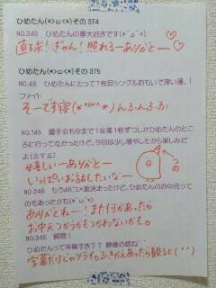

| 2014/03 09 Sun | ひめたん(*>ω<*)そ の416 |
公式サイトで
「気づいたら片想い」のジャケ写が
公開されたんだけどね
今回はアンダーメンバーも
ジャケ写に参加させていただきました；；
Type-C盤◎
よーろしーくねー♪

え、このひめたん髪茶色！びっくりした！
そんなわけでどーもひめたんです
ままから「椎茸」買ってきてーってメール来て
まいたけ 買ってしまったよ......
みなさんこれ読めるー？「しいたけ」だよー？
いや、ほんとに
ばかにしてるんじゃなくて
仲間をね、探してるの。
そんなひめたんですけれども
テスト終わったよ！
はっるやっすみーひゃっふー
ふっふふ〜ん⊂（ ＾ω＾）⊃
季刊 乃木坂お渡し会
来てくださったみなさん
本当にありがとうございました！

C列はこんな感じで
お届けして参りましたよー
はっ！あたし前髪が割れておる(゜ω゜)
かなりん (中田花奈ちゃん)
わかつき (若月佑美ちゃん)
ありがとー♪
かなりんファンのみなさんも
チーム闘魂のみなさんも
みんな好きよーってゆー方も
そしてひめきゅんさんもっ
みんなみーんな
仲良くしてくださって
ありがとうございました＼(^ω^)／
そしてそしてNOGIBINGO!2
ひめたんはちょーっと恥ずかしくて
オンエアまだ観てないけども(笑)
ひとつ覚えてるのは
吹雪がもんのすごくて
目あいてないと思うんだよね←
でもねー
前回のやつ良かったよーっていって
今回もエントリーしていただけて
ひめたん嬉しかったの(＊´ω`＊)
あの企画が復活したのも
みなさんのお便りがあまりに多くて
急遽やりましょう！ってなったからなんだよー
そーやって観てくださるみなさんと
一緒に番組ができていくんだねー
ステキだねー♪♪
考えてくださったみなさん
ありがとうございました！
個人的には
さゆ (井上小百合ちゃん)の
かわいかったきゅんきゅんしたー☆
りんごちゃんゆったん
双方向 天下統一クイズよかったよーヽ(；▽；)ノ
おつかれさまーヽ(；▽；)ノ

 ひめたんは雑誌の懸賞や商店街の福引とかで
ひめたんは雑誌の懸賞や商店街の福引とかで
何か当てたことありますか？
ちゃりんこ当たったことあるらし いのー♪
もうちっちゃい頃のことで
あたし自身ちっとも覚えてないけど
だめだなーそこで
一生分の運使っちゃったのかな......
ひめたんはライブ中に
ヘッドセットマイクをうっかり食べたことある？
どんな味がするのか教えてほしいんだけど！！
ねーちょっとー？
マイク食べた人なんて聞いたことないでしょ？
まずマイクってどんなのか知ってる？
そんなに気になるなら
食べてみてもいーんだよ？そして教えてよ？
実は、ひめたんも、ちょっとだけ気になったり......
するわけないでしょーがーごるあー？
んふふーふっふふ〜ん⊂（ ＾ω＾）⊃
わさびがダメなひめたんは、
辛いの全般がだめなの??それともわさびだけ??
辛いのはあーんまーし好きじゃないのです
舌がひーってなるからね
でも韓国料理は好きだよーう
ひめたんからリボン取り上げたら
どうなっちゃうんですか？
た だ の ひ め た んになります。
ひめたんお腹痛くなったときはどーしますか？
心の中でおうたを歌いますよー
あとは、お腹痛いに限らんけど
すぐお薬飲もうとするんだよね
ほんとはあんまよくないみたいなんだけどね←
きゅんきゅん王国も増税するんですか？
おかねのはなしは
ひめにはわからないにゃー(´-ω-`)
ひめたんのブログの
コメント欄下２ケタに46を踏んだ方へ
手書きでコメ返するコーナー
＼ ひめたん46 ／

いつもコメントたくさん
ありがとうございます♪
そう！テスト終わったのだよー
テストおわったっったーよー
ふっふふ〜ん⊂（ ＾ω＾）⊃
(あれ......今日テンションおかしくね？)って
多分みんな思ったと思うのね
きっと気を遣って口に出さなかったんだよね
そーなの！テストおわったの！
それでもう今日ずーっとふわふわしてる！
(＊´・ω・＊)
コメント(588)
2014/03/09 00:00